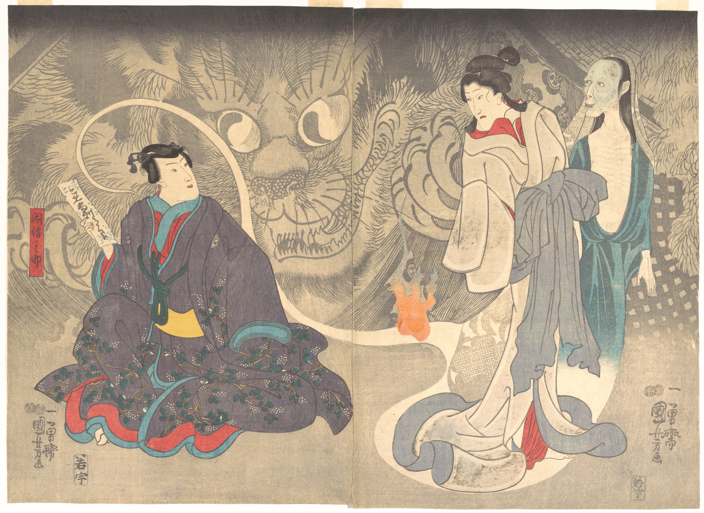
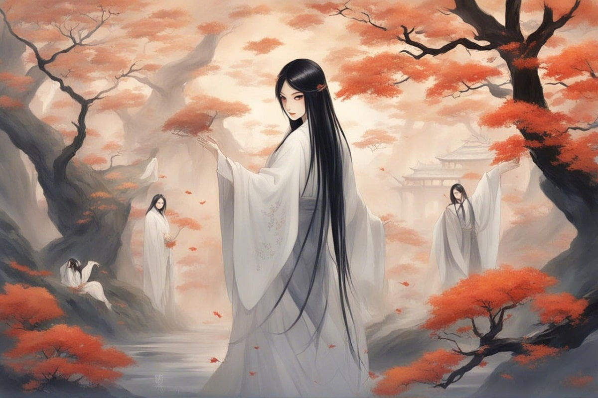

Similar to Western ghosts but often more tragic. Yūrei are spirits bound to the world by strong emotions—revenge, sorrow, or love. They usually have Long black hair, white burial kimono, floating with no feet. Oiwa from Yotsuya Kaidan, Japan’s most famous ghost story. Okiku from Banchō Sarayashiki, who counts broken plates from her well.
In Japanese belief, Yūrei are the souls of people who died with intense emotions — revenge, jealousy, sorrow, love, or betrayal — and were unable to pass peacefully into the afterlife. Unlike Western ghosts who may “haunt” for no reason, Yūrei existbecause something is unresolved. The word Yūrei (幽霊) literally means “faint spirit” or “dim soul” — from: 幽 (yū): faint, shadowy, hidden 霊 (rei): soul or spirit They are souls trapped between the physical and spiritual worlds, unable to move on because of unresolved feelings or improper death rituals. In Japanese belief, when a person dies, their spirit separates from the body. If proper rites are performed, the spirit becomes a hotoke (Buddhist spirit) and joins the ancestors. But if Death was sudden, violent, or emotional Funeral rites were neglected The person harbored deep grudges or attachments
Yūrei folklore is a blend of Buddhist ideas about karma and rebirth, and Shintō concepts of purity and pollution. Buddhism: teaches that attachment (執着 shūchaku) traps the soul. Shintō: regards death as kegare (impurity), which must be purified to restore balance. Edo Period (1603–1868): When ghost stories (kaidan) became popular entertainment in kabuki plays, illustrated books, and summer storytelling gatherings. The Edo era’s fascination with death, beauty, and tragedy gave Yūrei their iconic image and made them a distinctly Japanese symbol of the supernatural. The Shintō Foundation — Purity, Pollution, and the Spirit World Shintō (神道) — Japan’s indigenous belief system — revolves around the idea that everything has a spirit, or kami (神). Humans, animals, rivers, and even objects can contain spiritual essence (reikon 霊魂). Key Concepts: Reikon (霊魂): Every person possesses a soul that continues after death. Kegare (穢れ): Impurity or pollution, especially from death and blood. Harae (祓え): Purification rituals performed to cleanse kegare and restore harmony. Kami (神): Divine or spiritual forces that can bless or curse humans depending on their treatment. In Shintō, death is deeply impure — it disturbs the balance between the living and the kami. If a person dies suddenly, violently, or without proper rites, their reikon cannot be purified and risks becoming a malignant spirit (arami-tama 荒御魂). ⚱️ Thus, the Yūrei are seen as polluted, untamed souls — impure spirits that remain among the living. Shintō shrines historically avoided funerals and the dead altogether, since death’s impurity could defile sacred space. This left Buddhism to handle death rituals — and that’s where the next layer of belief comes in.
OKIKU (The Ghost of the Nine Plates)
Okiku was a servant girl working for a samurai. One day, she accidentally broke or lost one of ten valuable plates. Her master, enraged, accused her of theft and killed her — sometimes by throwing her down a well. Her ghost returned, counting: “One… two… three… four… five… six… seven… eight… nine…” — and then she screams, realizing the tenth plate is missing. 🕳️ Even now, wells at some old estates are said to echo with her counting at night.